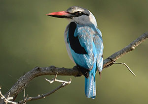

- Common Name: Kingfisher
- Scientific Name: Halcyon Malimbica
- Type: Birds
- Diet: Omnivore
- Average life span in The Wild: Up to 10 years
- Size: 9.8 inches
- Weight: 3.17 ounces
About the Blue-Breasted Kingfisher
Appearance
The blue-breasted kingfisher (Halcyon malimbica) is a fairly large kingfisher (25cm high) with a distinctive blue breast from which it takes its name. You can also recognise it by its huge red and black bill. The sexes are fairly similar in appearance.
Call
Its call is a loud and far-carrying, undulating laughing trill: begins with a sharp ti or chiu succeeded by a series of mournful whistles chiu pu-pu-pu-pu ku ku ku ku. There is a raucous flight alarm call tchup tchup-tchup-tchup.
Where & When
It can be seen at any time of year in The Gambia, near water and especially in the mangroves of the River Gambia’s tributaries, usually hiding in the shade. The mangroves around Mandina Lodge, as well as Kotu creek would be a good bet.
Behaviour
It is omnivorous, mainly eating insects as well as arthropods, fish, frogs and palm oil kernels. Pairs breed in the late rainy season, nesting in termite mounds.
Read more about the Blue-Breasted Kingfisher on Wikipedia